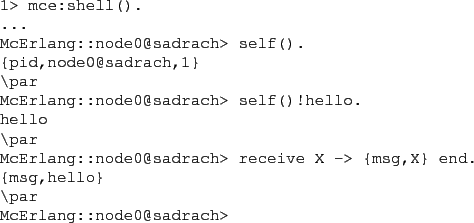

Next: Limitations Up: Running McErlang Previous: Debugger Commands Contents
The shell supports an online mapping of Erlang API functions to McErlang ones. For example, the expression @self()!hello@ will be mapped to @mcerlang:send(mcerlang:self(),hello)@. Moreover it is possible to execute a @receive@ expression.
As an example, the following shell interaction works as expected,
although internally the McErlang API is used instead of the
Erlang one:

Arbitrary functions can be executed in the shell, logically executing of a particular node. To switch to executing on a different node the function @connect_to_node(NodeName::atom())@ can be executed.